Welcome to the solar system of geometry created by our father of geometry, known as Euclid. In the vast universe of mathematics, the solar system of geometry stands as the most notable and elegant solar system. Mathematics has a long history that dates back to prehistoric societies. Ancient mathematical writings come from Egypt and Mesopotamia. From then on the development of the Hindu-Arabic numeral system, which gave us the digits 0 −9, and the invention of the equals sign (=) by Robert Recorde in 1557 became a huge turning point of mathematics.
Today, our exploration begins with the solar system of geometry, and we sail in the planet of infinite and endless coastlines - the planet of fractal geometry.
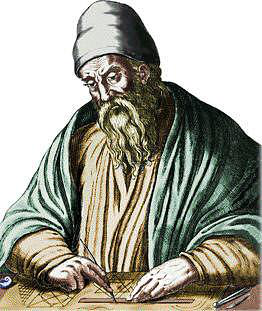
Now let’s launch our rocket into the solar system of geometry. Geometry is a branch of mathematics concerned with properties of space such as the distance, shape, size, and relative position of figures. The word “geometry” comes from the Greek words geo (earth) and metria (measuring), meaning “measurement of the earth”. The father or else the king of geometry is the Greek mathematician Euclid. Until the 19th century, geometry was almost exclusively devoted to Euclidean geometry, which includes the notions of point, line, plane, distance, angle, surface, and curve, as fundamental concepts.
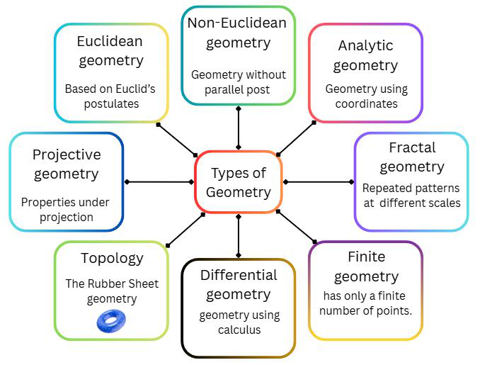
This unique solar system of geometry consists of vast number of planets, such as Euclidean geometry, non-Euclidean geometry, analytic geometry, differential geometry, projective geometry topology, finite geometry, fractal geometry and discrete geometry planets.
But for today, let’s begin our voyage on the planet of fractal geometry, the mysterious planet consisting of infinite coastlines and home to endless folds.
Now, we have arrived to a mysterious and a unique planet in the solar system of geometry - The planet of fractal geometry. Fractal geometry is a type of geometry where a certain figure is repeated in an irregular and similar way but in different scales. In 1975, the term “fractal” was coined by the mathematician, Benoît Mandelbrot as a Latin term fractus meaning ‘fractured’ and that is how this planet got its name as the planet of fractal geometry. The father or else the founder of this planet is Benoît Mandelbrot.
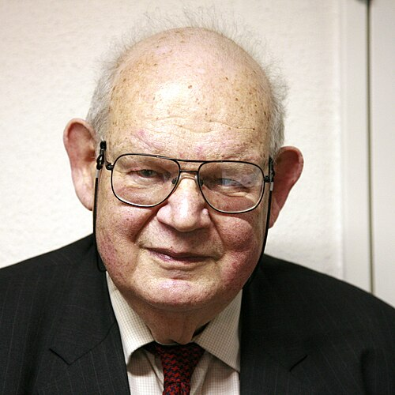
Fractal geometry is totally different from ordinary geometric shapes because it contains endless complexity and when you zoom into a fractal it appears new structures and they’re the smaller versions of the whole figure which is known as self-similarity. Not only that, a fractal often has a non-integer dimension. That means the coastline in this planet might have a decimal or a fraction dimension.
Some examples for self-similarity are
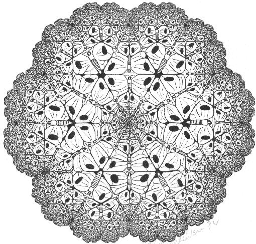
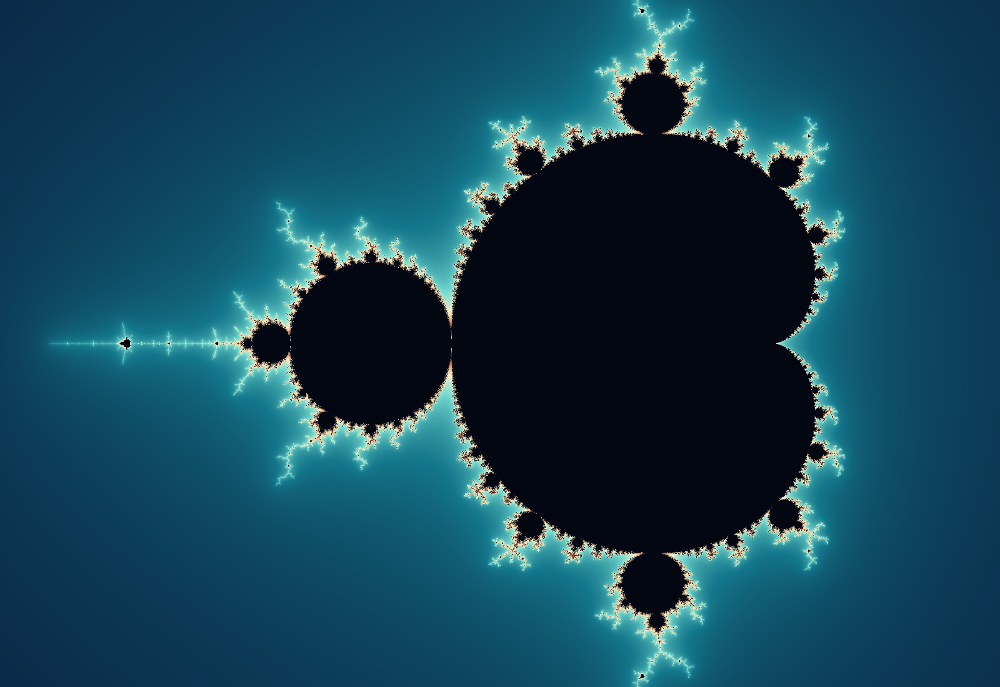
The one of the most iconic and the famous fractals in mathematics is the Mandelbrot set which is also the map of the planet. A unique feature of the Mandelbrot set is that it is not a perfect self-similar figure because different regions are made up of dramatically different shapes, but all are connected to one infinite boundary. So, when we zoom into the map of the planet of fractal geometry, it’s almost like travelling around the planet where every ocean, island, tree, mountain and so on are all fractals.
This is also another fractal called the Sierpinski triangle named after the Polish mathematician Waclaw Sierpinski which metaphorically indicates a glazier on the planet of fractal geometry while revealing the uniqueness of fractals. This is a fractal formed by subdividing recursively into smaller equilateral triangles with an overall shape of an equilateral triangle.
Now, before starting to sail around the planet, make sure to tuck up the map - the Mandelbrot set, before getting lost in the infinite coastlines.
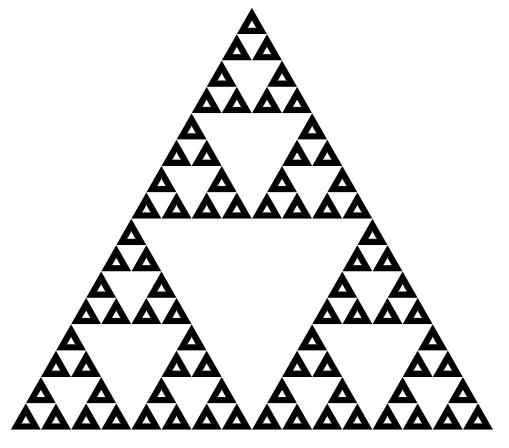
As we continue our voyage around the planet of fractal geometry, the first thing we can’t overlook is the mother nature. Luckily this planet also somewhat similar to the earth when it comes to the diversity of nature but the most unbelievable part is that all the trees, mountains, oceans, islands and many other nature inspired elements are actually fractals giving a unique identity to this planet.
So, when we further explore the unique nature owned by this planet, it is clearly visible that a tree’s branch portrays, the miniature version of the large tree. The following artistic and inspiring natural elements set good examples to portray the beauty of fractal inspired nature.
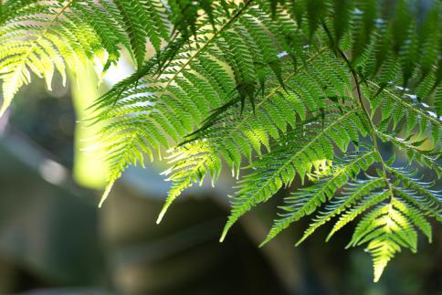
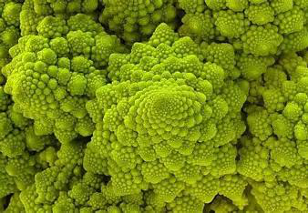
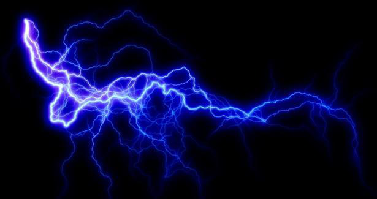
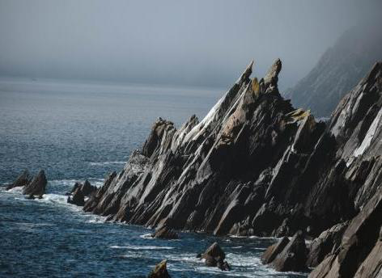
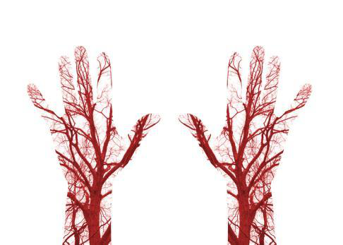
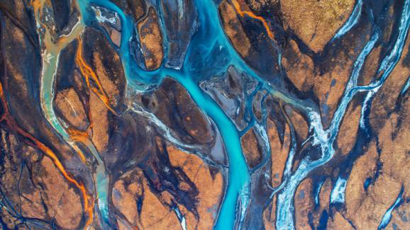
Mathematicians capture this complexity of fractals using deep ideas, knowledge and equations with the aid of the core equation, fractal dimension, Julia sets and chaos theory and fractal calculus. These drive us to much more complex paths in the planet of fractal geometry. So now, it’s time to explore the most interesting plus complex paths in this world.
Now we have arrived at our new destination, the mathematical core in the planet of fractal geometry.
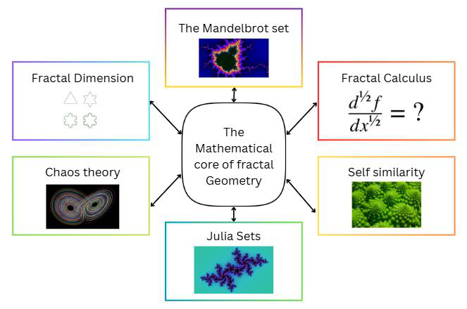
The Mandelbrot set is the core equation of fractal geometry and that is,
Start with \(z_0 = 0\) and we check whether the sequence stays bounded or escapes to infinity. If it remains bounded, then \(c\) belongs to the Mandelbrot set: otherwise, it lies outside.
As shown in the image of the Mandelbrot set in page 3, coastlines, snowflakes and river networks set good examples to portray the Mandelbrot boundaries and recursive spirals. And it acts not only as the map of this planet but also as a map of all Julia sets.
Fractal geometry showcases dimension beyond whole numbers, such as decimal numbers and fractional numbers that portray the roughness of nature.
For example, if a snowflake divides to 4 smaller parts each scaled by 3, what would be the dimension?
The final answer shows that a snowflake is much more complex than a straight line revealing the roughness of nature while making it more beautiful
Even though Julia sets use the same equation as the Mandelbrot set, the significant difference is that \(c\) is actually fixed for a single set, unlike in the Mandelbrot set, and we’re supposed to test different starting points \(z\). Julia sets were discovered by a French mathematician Gaston Julia. They perform a unique and mysterious job to portray it as the mystical landscape of the planet of fractal geometry where order exists.
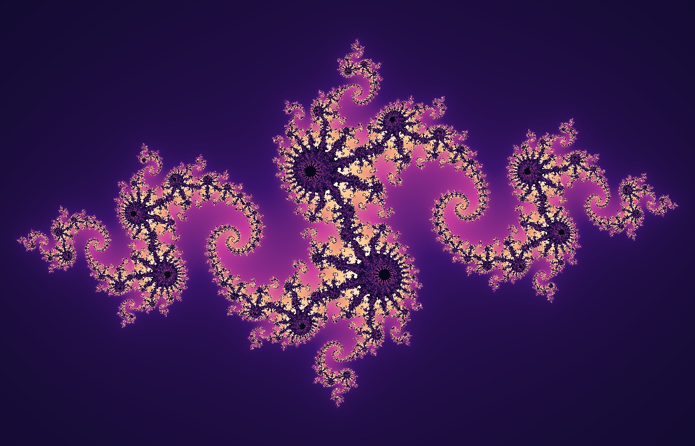
Chaos theory is the study of complex systems, that appear random while following deterministic rules that are highly sensitive to previous conditions. This is mostly famous through the butterfly effect.
The main key concepts related to chaos theory are,
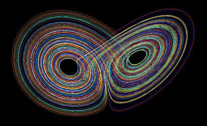
Weather forecasting, fluid dynamics, biology and astronomy are the best examples for chaos theory, since it performs a vital role as the law of unpredictability in the planet of fractal geometry.
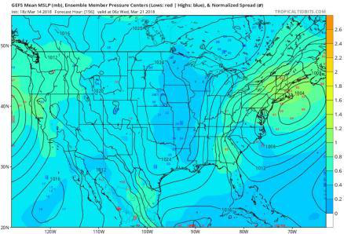
Fractal calculus extends traditional calculus in a more complex way that includes calculus to fractal spaces. Although traditional calculus assumes smoothness including smooth curves, fractal calculus is totally different from it due to its adaptability to derivatives and integrals to fractal geometry while dealing with irregular and self-similar structures.
Fractal calculus in the planet of fractal geometry is vividly showcased by coastlines, mountains, heat diffusion and blood flowing through vessels.
After some time in our journey, we finally arrived at a continent which is very much similar to our earth and it is inhabited by living beings. Yet, the houses seemed to be constructed by using Sierpinski triangles and carpets and decorated with Koch curves, as a part of the uniqueness and creativity in the planet of fractal geometry. And look! A living being is coming out of the house who seemed to have the same structure of humans but in a completely different way, as they are decorated with fractals, which symbolizes the beauty of the planet of fractal geometry. So now it’s time to explore their mysterious discoveries.
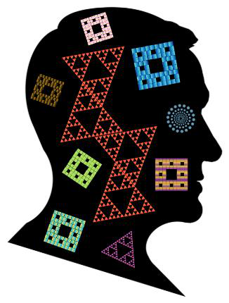
As we continue our voyage with a new member, a fractal human, their unique and wonderful art galleries including fractal-inspired portraits of Jackson Pollock such as Number 1, 1950 (Lavender Mist), Autumn Rhythm (Number 30), and Number 32, 1950 emerges the creativity of fractal geometry through its complexity. Not only that, even the ancient art forms such as Islamic mosaics, Celtic knots and mandalas effectively portray fractals in human creativity through art.
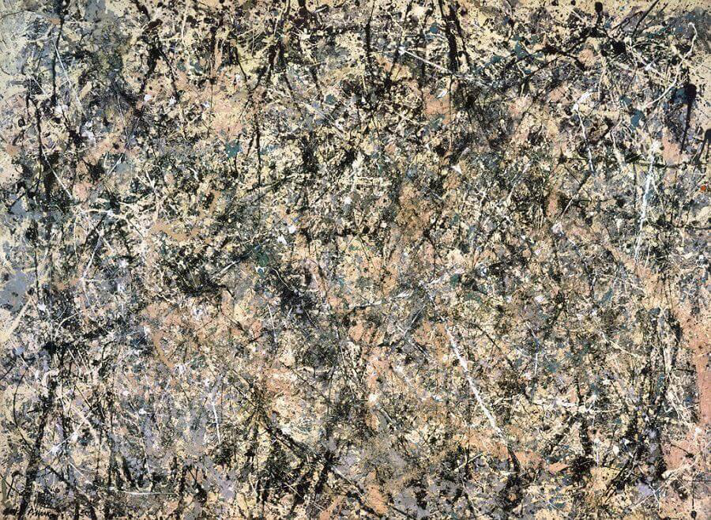
There are numerous cities built by fractal humans as true wonders of the fractal geometry. While some constructions including religious architectural buildings and Gothic architecture brings out the ancient and cultural value to this planet, the modern buildings like The lotus temple and Infosys Building, Pune upgrades the value of fractal geometry. Not only that, even Gardens by the Bay connects fractals in nature with human creativity, enhancing the uniqueness of the planet of fractal geometry, making our journey much more fascinating.
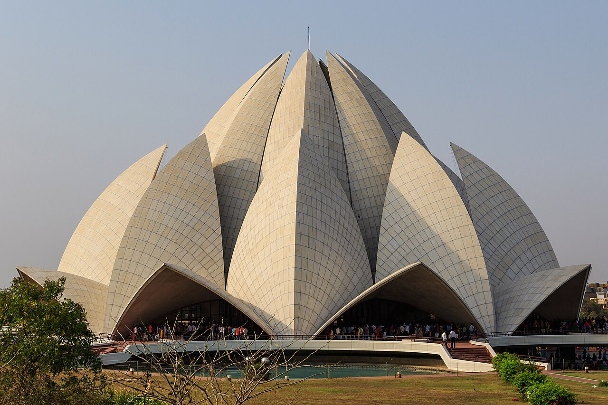
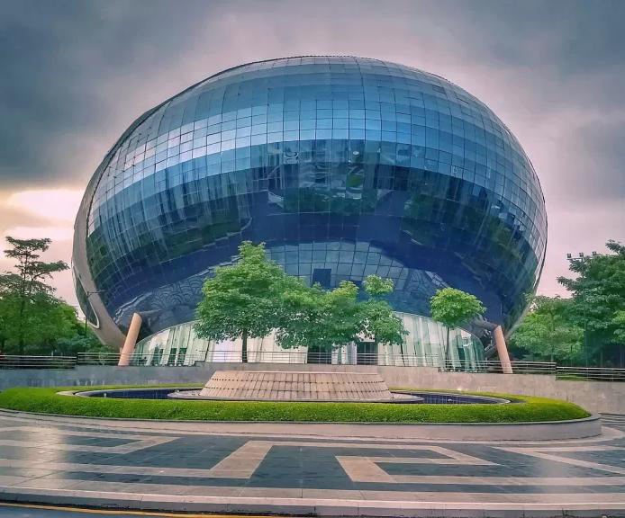
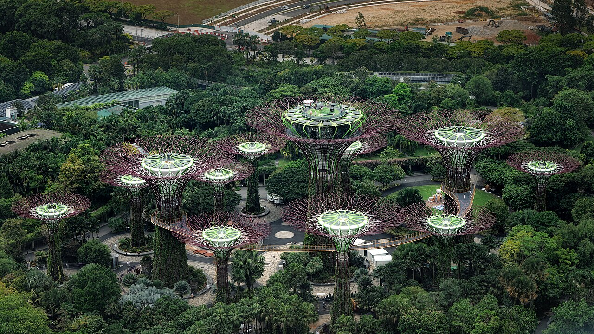
The attire of our fractal friend gives a unique identity to the planet of fractal geometry because its beauty is blended with various fractals. It gives the idea that even in fashion designing, the usage of fractals effectively creates an aesthetic and fashionable sense through its complexity. Iris Van Herpen, a fashion designer sets a good example for introducing new fashion designs using fractals.
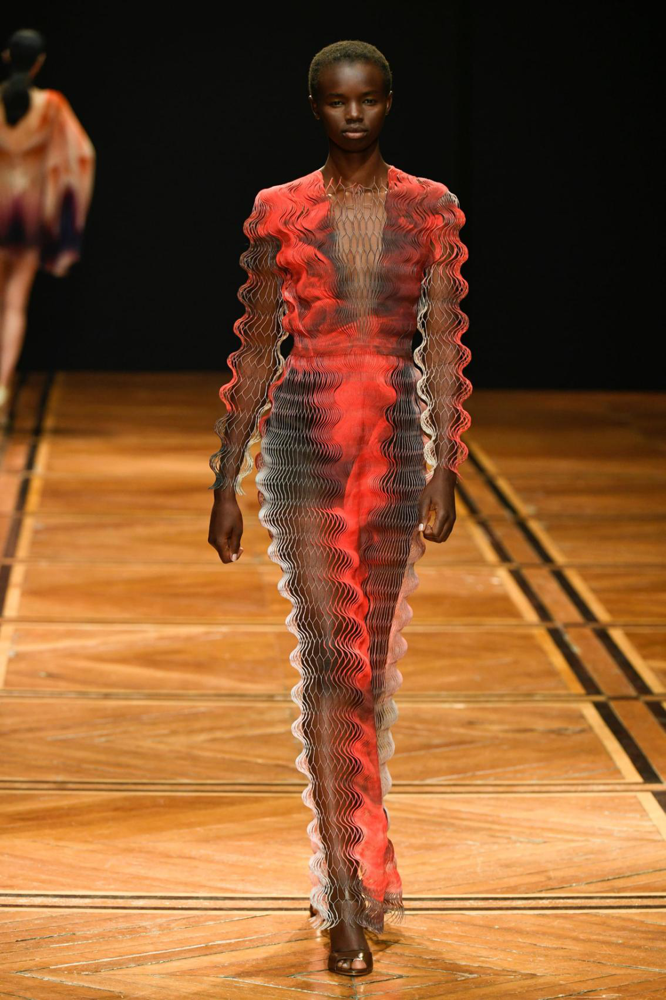
In addition to that, modern discoveries in the planet of fractal geometry including modern Science and technology (medicine, computer graphics and animation), Philosophical and metaphorical reflections (human imagination and infinity & beauty) and future explorations like in space and sustainability, especially this adventurous yet inspiring voyage to this mysterious planet of fractal geometry as a part of an exploration showcases fractals in human creativity.
After completing our journey throughout the solar system of geometry, we can conclude that, the planet of fractal geometry shines the brightest among the other planets not for its simplicity, but for its endless, infinite nature combined with creativity and imagination, making it impossible to leave our fractal companion and the planet of fractal geometry. From Mandelbrot’s infinite coastlines to Julia’s mystical landscapes, fractals remind us that mathematics is not just confined to calculations but also the open to imagination, blending mathematics, art, science and creativity together.
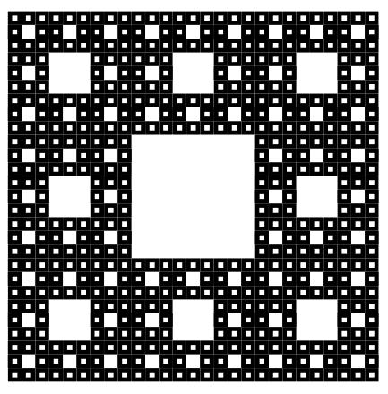
This journey vividly brings out the idea that fractals are something beyond equations as they live in patterns shaping the nature, space and human creativity. This endlessly creative, infinite, mysterious and beautiful fractal geometry showcases that geometry is not actually a cold set of rules and theorems but a vast universe waiting to be explored.
I would like to thank Dr Tom Crawford and the Oxford University for giving such valuable opportunities to maths lovers to showcase their passion and interest in mathematics through creativity and imagination. As the roots of my journey, I am deeply grateful to my parents, siblings, and teachers for encouraging and supporting me. I also acknowledge my own passion for mathematics and graphic design, which inspired the original illustrations including Sierpinski carpets and triangles and creative metaphors in this essay. This voyage has been both mathematical and imaginative, and I am thankful to everyone who helped me explore the planet of fractal geometry in the solar system of geometry under the control of Euclid.